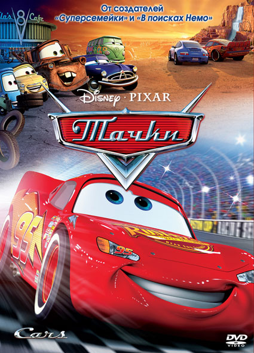
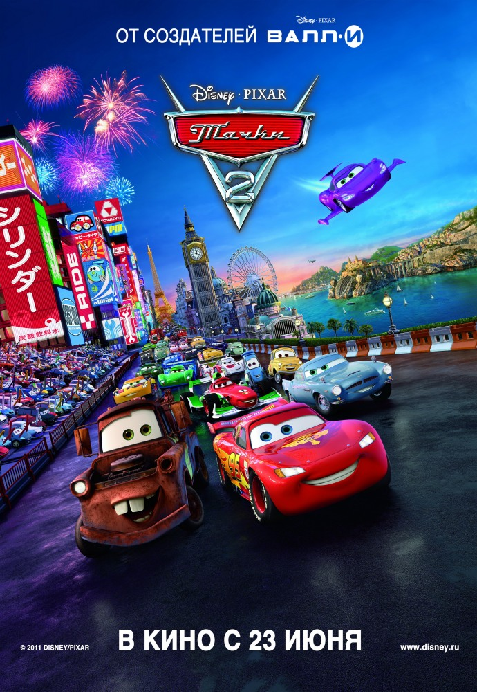
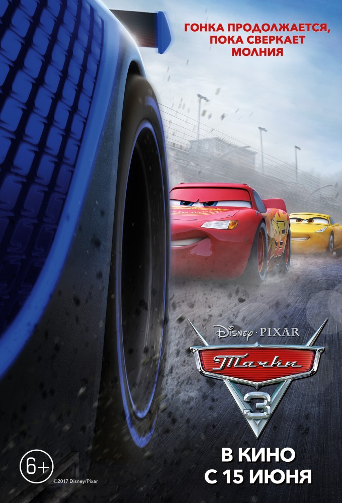
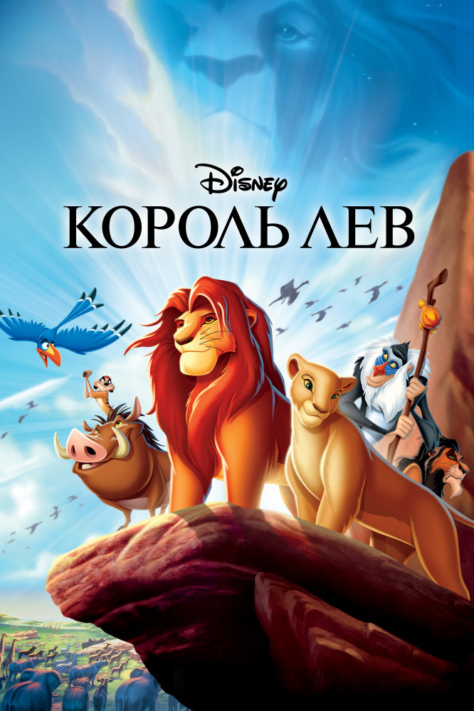

| № | Title | Description | Year | Poster |
| 1 | Тачки |
Неукротимый в своем желании всегда и во всем побеждать гоночный автомобиль «Молния» Маккуин вдруг обнаруживает, что сбился с пути и застрял в маленьком захолустном городке Радиатор-Спрингс, что находится где-то на трассе 66 в Калифорнии. Участвуя в гонках на Кубок Поршня, где ему противостояли два очень опытных соперника, Маккуин совершенно не ожидал, что отныне ему придется общаться с персонажами совсем иного рода. Это, например, Салли — шикарный Порше 2002-го года выпуска, Док Хадсон — легковушка модели «Хадсон Хорнет», 1951-го года выпуска или Метр — ржавый грузовичок-эвакуатор. И все они помогают Маккуину понять, что в мире существуют некоторые более важные вещи, чем слава, призы и спонсоры… |
2006 |  |
| 2 | Тачки 2 | Молния МакКуин и его друг Мэтр отправляются в международное путешествие — когда МакКуин получает шанс участвовать в соревнованиях для самых быстрых машин в мире, Мировом Гран-При. Этапы этих престижных гонок заведут друзей в Токио, на набережные Парижа, на побережье Италии, и на улицы туманного Лондона. |
2011 |  |
| 3 | Тачки 3 | Встречайте самого знаменитого гонщика всех времен, легенду гоночного трека Молнию Маккуина! Герой все еще продолжает показывать лучшие результаты на всех турнирах, однако победы даются ему не так легко, а конкуренция становится все жестче. Молнию Маккуина ждут захватывающие приключения, где он встретит новых друзей, а также поймет, что не только скорость и мощность мотора делают гонщика чемпионом. |
2017 |  |
| 4 | Король Лев | У величественного Короля-Льва Муфасы рождается наследник по имени Симба. Уже в детстве любознательный малыш становится жертвой интриг своего завистливого дяди Шрама, мечтающего о власти. Симба познаёт горе утраты, предательство и изгнание, но в конце концов обретает верных друзей и находит любимую. Закалённый испытаниями, он в нелёгкой борьбе отвоёвывает своё законное место в «Круге жизни», осознав, что значит быть настоящим Королём. |
1994 |  |
| Total: | 4 | |||